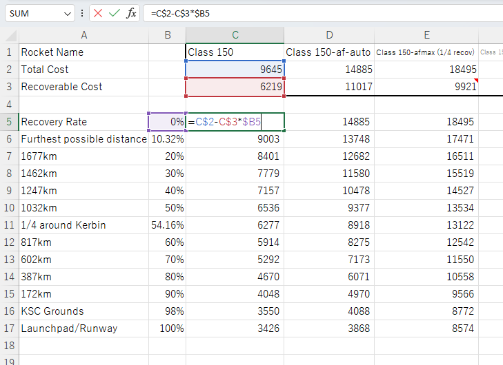
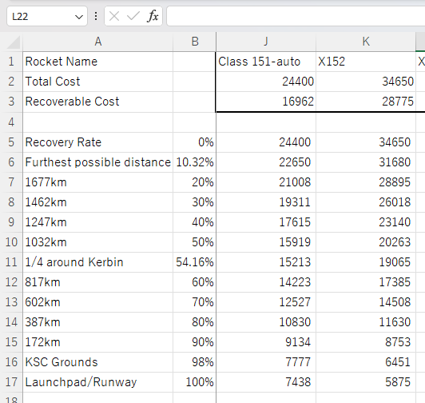
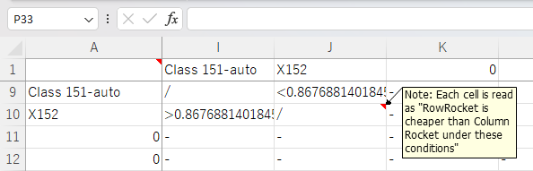

Kerbal Space Program (KSP) is a game in which players assemble rockets by combining various rocket parts, such as rocket engines, fuel tanks, payload fairings, etc.
Parameters such as the rocket’s cost and capabilities are dependent on the types of parts used, their number of parts used, and their arrangement within the rocket.
The purpose of this excel sheet was to calculate the actual launch costs of various rocket designs, and allow for comparing the cost effectiveness of rocket designs.
Within KSP, there is a game mechanic that allows for rockets to have flown to be recovered, allowing for a partial refund of the cost of the rocket.
However, not all rocket parts can be recovered. Any rocket part that is destroyed, despawns (by exiting the range in which in-game physics are calculated), or is unable to return to the surface of Kerbin (the planet) becomes unrecoverable.
Examples of unrecoverable parts of a rocket include
Any parts that are not destroyed or despawned, and returns safely to the surface of Kerbin can be recovered for a partial refund of the part cost. The recovered cost is multiplied by the recovery rate, which is determined by the distance in which the part is recovered from the launch site.
The recovery rate is determined by the formula
0.98 - surface_distance_in_km/2150
The recovery rate ranges from a 10.32% minimum to a 100% maximum
Based on these game mechanics, the launch cost of a given rocket can be expressed
as a linear equation
LaunchCost = UnrecoverableCost + LossesFromImperfectRecovery
LaunchCost = UnrecoverableCost + (1-RecoveryRate)*RecoverableCost
As
TotalCost = UnrecoverableCost + RecoverableCost
UnrecoverableCost = TotalCost - RecoverableCost
It is possible to manipulate the equation to
LaunchCost = (TotalCost - RecoverableCost) + (1-RecoveryRate)*RecoverableCost
LaunchCost = TotalCost - RecoverableCost*RecoveryRate
The equation in the form of
LaunchCost = TotalCost - RecoverableCost*RecoveryRate
is better suited for the game, as the total cost is given in-game, thus
only the RecoveryCost needs to be determined by removing parts and emptying tanks
Cost comparisons between rocket designs can be done by calculating the intersections of
the two linear equations. The intersection provides the RecoveryRate in which the rocket
designs have equal launch costs.
Intersection RecoveryRate = (TotalCost1-TotalCost2)/(RecoverableCost1-RecoverableCost2)
Note: The formula typically used to calculate the intersection of two linear
equations in the form of y=ax+b is
x=(b1-b2)/(a2-a1)
Where a2 is subtracted by a1 in the denominator
For the purposes of this comparison, a = -RecoverableCost. Simplifying the equation
to use RecoverableCost (positive) instead of -RecoverableCost (negative),
x=(b1-b2)/((-RecoverableCost2)-(-RecoverableCost1))
x=(b1-b2)/(-RecoverableCost2+RecoverableCost1)
x=(b1-b2)/(RecoverableCost1-RecoverableCost2)
And thus, RecoverableCost1 is subtracted by RecoverableCost2, which is the reverse of
the typical equation.
The rocket launch costs for each rocket design is calculated on the Rocket Cost Sheet
RecoveryRates were calculated for every 10% increment, along with 3 additional values
The list of costs was calculated using the expression
LaunchCost = TotalCost - RecoverableCost*RecoveryRate
=C$2-C$3*$B5

The cost comparisons between rocket designs is calculated on the Cost Comparison Sheet
The names of each rocket design is automatically duplicated from the
Rocket Cost Sheet on the first row and column with the expression
Expression for first row:
='Rocket Cost Sheet'!C$1
Expression for first column:
=INDIRECT(ADDRESS(1,ROW()))
The comparison function was implemented to compare the costs of each rocket, but this produced issues that required addressing
Issue 1: The intersection of the two linear equations falls beyond the range of 0 and 1 (inclusive). Since it is not possible to have a RecoveryRate of less than 0% (a complete loss) or greater than 100% (a complete recovery), the intersection does not provide meaningful information.
Issue 2: The rockets have equal RecoverableCost. This causes the linear equations to be parallel, and thus having no intersection.
Under the circumstances outlined in Issue 1 and Issue 2, the cost comparison can be done by simply comparing the TotalCost of the rockets. Since the linear equations do not intersect within the range of 0 and 1 (between a 0% and 100% RecoveryRate), the rocket with the lower TotalCost will always be cheaper within the useful range.
Issue 3: For linear equations that do intersect within the range of 0 and 1, the value of the intersection alone does not provide useful information. Along with knowing the intersection, it is necessary to determine which rocket design is cheaper for a given RecoveryRate.
This again can be achieved by comparing the TotalCosts of the rockets. The rocket with the lower TotalCost will be cheaper from 0% to the intersection RecoveryRate, and the rocket with the higher TotalCost will be cheaper from the intersection RecoveryRate till 100%.
The Expression included the fixes to the issues, and was implemented with the following logic
Step1: Don’t run a comparison if the Column or Row is empty - filter with an IF statement
Step2: Don’t run a comparison if the costs if the ColumnRocket and the RowRocket are the same - filter with an IF statement
Step3: Calculate for the intersection using the formula
RecoveryRate = (TotalCost1-TotalCost2)/(RecoverableCost1-RecoverableCost2)
Step 3a: If the RecoveryRate is <0 or >1, compare the TotalCost. If the RowRocket has a cheaper TotalCost than ColumnRocket, fill the box with “always”, otherwise fill with “never”
Step 3b: If the RecoveryRate is between 0 and 1, compare the TotalCost. If the RowRocket has a cheaper TotalCost than ColumnRocket, fill the box with “<”, otherwise fill with “>”. Then append the RecoveryRate
Step 4: use the IFERROR expression to catch for the #DIV/0! error. If triggered, this means the linear equations of the rockets do not intersect. compare the TotalCost. If the RowRocket has a cheaper TotalCost than ColumnRocket, fill the box with “always”, otherwise fill with “never”
The implemented expression is as followed
=IF(OR(B$1=0,$A2=0),"-",IF(B$1=$A2,"/",IFERROR(IF(OR( (((XLOOKUP($A2,
'Rocket Cost Sheet'!$1:$1,'Rocket Cost Sheet'!$2:$2)-XLOOKUP(B$1,'Rocket Cost Sheet'!$1:$1,
'Rocket Cost Sheet'!$2:$2))/(XLOOKUP($A2,'Rocket Cost Sheet'!$1:$1,'Rocket Cost Sheet'!$3:$3)
-XLOOKUP(B$1,'Rocket Cost Sheet'!$1:$1,'Rocket Cost Sheet'!$3:$3)))<0),(((XLOOKUP($A2,'Rocket
Cost Sheet'!$1:$1,'Rocket Cost Sheet'!$2:$2)-XLOOKUP(B$1,'Rocket Cost Sheet'!$1:$1,'Rocket Cost Sheet'
!$2:$2))/(XLOOKUP($A2,'Rocket Cost Sheet'!$1:$1,'Rocket Cost Sheet'!$3:$3)-XLOOKUP(B$1,'Rocket Cost Sheet'
!$1:$1,'Rocket Cost Sheet'!$3:$3)))>1)),IF(XLOOKUP($A2,'Rocket Cost Sheet'!$1:$1,'Rocket Cost Sheet'!$2:$2)<
XLOOKUP(B$1,'Rocket Cost Sheet'!$1:$1,'Rocket Cost Sheet'!$2:$2),"Always","Never"),IF(XLOOKUP($A2,
'Rocket Cost Sheet'!$1:$1,'Rocket Cost Sheet'!$2:$2)<XLOOKUP(B$1,'Rocket Cost Sheet'!$1:$1,'Rocket
Cost Sheet'!$2:$2),"<",">")&((XLOOKUP($A2,'Rocket Cost Sheet'!$1:$1,'Rocket Cost Sheet'!$2:$2)-XLOOKUP(B$1,
'Rocket Cost Sheet'!$1:$1,'Rocket Cost Sheet'!$2:$2))/(XLOOKUP($A2,'Rocket Cost Sheet'!$1:$1,'Rocket Cost
Sheet'!$3:$3)-XLOOKUP(B$1,'Rocket Cost Sheet'!$1:$1,'Rocket Cost Sheet'!$3:$3)))),IF(XLOOKUP($A2,'Rocket
Cost Sheet'!$1:$1,'Rocket Cost Sheet'!$2:$2)<XLOOKUP(B$1,'Rocket Cost Sheet'!$1:$1,'Rocket Cost Sheet'!$2:$2)
,"Always","Never"))))
Explanation of the expression:
Hover over boxes to get an explanation of the code snippet
=IF(OR(B$1=0,$A2=0),"-", IF(B$1=$A2,"/", IFERROR( IF(OR( (((XLOOKUP($A2,'Rocket Cost Calculations'!$1:$1,'Rocket Cost Calculations'!$2:$2)-XLOOKUP(B$1,'Rocket Cost Calculations'!$1:$1,'Rocket Cost Calculations'!$2:$2))/(XLOOKUP($A2,'Rocket Cost Calculations'!$1:$1,'Rocket Cost Calculations'!$3:$3)-XLOOKUP(B$1,'Rocket Cost Calculations'!$1:$1,'Rocket Cost Calculations'!$3:$3)))<0) , (((XLOOKUP($A2,'Rocket Cost Calculations'!$1:$1,'Rocket Cost Calculations'!$2:$2)-XLOOKUP(B$1,'Rocket Cost Calculations'!$1:$1,'Rocket Cost Calculations'!$2:$2))/(XLOOKUP($A2,'Rocket Cost Calculations'!$1:$1,'Rocket Cost Calculations'!$3:$3)-XLOOKUP(B$1,'Rocket Cost Calculations'!$1:$1,'Rocket Cost Calculations'!$3:$3)))>1) ), IF(XLOOKUP($A2,'Rocket Cost Calculations'!$1:$1,'Rocket Cost Calculations'!$2:$2)<XLOOKUP(B$1,'Rocket Cost Calculations'!$1:$1,'Rocket Cost Calculations'!$2:$2),"Always","Never") ,IF(XLOOKUP($A2,'Rocket Cost Calculations'!$1:$1,'Rocket Cost Calculations'!$2:$2)<XLOOKUP(B$1,'Rocket Cost Calculations'!$1:$1,'Rocket Cost Calculations'!$2:$2),"<",">") & ((XLOOKUP($A2,'Rocket Cost Calculations'!$1:$1,'Rocket Cost Calculations'!$2:$2)-XLOOKUP(B$1,'Rocket Cost Calculations'!$1:$1,'Rocket Cost Calculations'!$2:$2))/(XLOOKUP($A2,'Rocket Cost Calculations'!$1:$1,'Rocket Cost Calculations'!$3:$3)-XLOOKUP(B$1,'Rocket Cost Calculations'!$1:$1,'Rocket Cost Calculations'!$3:$3)))) , IF(XLOOKUP($A2,'Rocket Cost Calculations'!$1:$1,'Rocket Cost Calculations'!$2:$2)<XLOOKUP(B$1,'Rocket Cost Calculations'!$1:$1,'Rocket Cost Calculations'!$2:$2),"Always","Never") ) ) )
The Class 151-auto rocket was a next-generation rocket designed to
carry heavier payloads to orbit using the newly unlocked RE-I5 "Skipper"
rocket engine.
PICTURE 151-auto
However, a new contract to test LFB KR1x2 "Twin Boar" rocket engine allowed
for temporary use of the engine, and a X152 prototype rocket using the new
engine was built. The performance of the X152 was tested to be comparable
with Class 151-auto.
PICTURE X152
The TotalCost of the X152 was more expensive than the Class 151-auto, but the X152 had a higher RecoverableCost. This was a product of the X152 having less unrecoverable parts, notably the lack of solid rocket boosters that would be jettisoned (and thus be unrecoverable) in the early stages of the launch. There was a possibility that the X152 could prove to be the cheaper launch vehicle.
The launch costs of the two rockets were studied using the tool.


After analysis, while it was true that the X152 could have cheaper launch costs than the Class 151-auto, that would only be true if the X152 could be recovered at a RecoveryRate greater than about 86%. This would mean that the rocket would need to land and be recovered at a location closer than 241 km from the Launch site. Although this would allow for a non-trivial area to land within, controlling the descent to land within the area would require careful calculation and skill.
This narrow scope in which the X152 would be cheaper was due to its expensive TotalCost. Despite having more recoverable parts, the total costs of the recoverable parts was close to the TotalCost of the Class 151-auto, meaning that any benefit could not be realized unless most of the cost could be recovered with a high RecoveryRate.
Furthermore, the maximum possible benefit the X152 could provide over the Class 151-auto was only a cost of 1563. Considering that a single AV-R8 Winglet (attached at the bottom of the rocket) costs 640, which had the possibility of getting destroyed in a bad landing, the benefits were meagre and could easily be lost.
Based on this analysis, it was decided to not pursue further development of the X152. The testing was done with a temporary unlocking of the LFB KR1x2 "Twin Boar" rocket engine. Unlocking the part would have required [UNLOCK SCIENCE AND FUNDS], which simply could not justify its limited benefits.